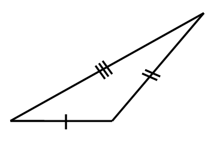
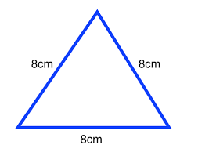
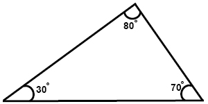
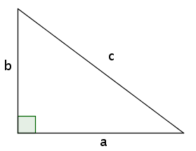

Introduction to Triangle
Triangle - Area bounded by three regions are known as triangle .

Types of Triangle - There are two types of triangle -
1. on the basic of sides .
2. on the basic of angles .
1. on the basic of sides Triangles are of three types -
(i) scalene triangle
(ii) isosceles triangle
(iii) equilatrel triangle
2. on the basic of angle Triangles are of three types -
(i) Acute angle triangle
(ii) Right angle triangle
(iii) Obtuse angle triangle
on the basic of sides different triangles are -
(i) scalene triangle - if all the sides of a triangle are different , known as scalene triangle .
in this triangle not of any sides are equal
AB ≠ BC ≠ AC

(ii) isosceles triangle - if any two sides of a triangle are equal , known as isosceles triangle .
in this figure AB = AC ;

(iii) equilateral triangle - if all the sides of a triangle are equal , known as equilateral triangle .
in this triangle all the sides are equal i.e.
AB = BC = AC

on the basic of sides different triangles are -
(i) Acute angle triangle - All three angles of a triangle are acute , known as acute angle triangle .
in this triangle all the angle is less than 90°
∠A = ∠B = ∠C < 90°

(ii) Right angle triangle - one angle of a triangle is right angle(90°) , known as right angle triangle .
in this triangle one angle is 90°
here , ∠B = 90°

(iii) obtuse angle triangle - one angle of a triangle is obtuse , known as obtuse angle triangle .
in this triangle ∠B is obtuse i.e. ∠B > 90°